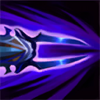
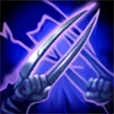

起手裝備
 長劍
長劍

三相替代預設巨蛇，星蝕與席利妲維持近身普攻和技能輪轉；只有護盾妨礙擊殺時才換巨蛇。


五件成裝與鞋子分開列示；起手與核心是購買路線，不是額外佔用的成裝欄位。鞋子完成時機仍依對線壓力與回城金錢調整。


征服者、戰鬥狂熱與技能疾速支援較長影子換血；回春補對線被消耗，取代全刺殺支系。


閃現點燃維持單點壓力，留影子撤退優先於貪點燃距離。
加點優先：Q > E > W
主Q、副E、W最後；影子與本體Q角度需同時安排。
對低生命目標普攻時造成額外魔法傷害；同一目標在短時間內只會觸發一次，是補刀、換血與完成斬殺的重要傷害來源。
劫與影分身朝指定方向投擲手裡劍並造成物理傷害。多枚手裡劍同時命中同一目標，是主要爆發來源。
有後續版本調整的項目以較新數值為準；未列出者不代表完整技能成長表。
向前放出影分身，影分身會同步施放一技與三技；重施可與影分身交換位置。劫與影子用相同技能命中同一目標時可回復能量。

劫與影分身斬擊周圍敵人。劫本體命中英雄可縮短二技冷卻，影分身命中則會造成緩速，方便後續手裡劍命中。
有後續版本調整的項目以較新數值為準；未列出者不代表完整技能成長表。

短暫不可被選取並突進到目標身後，留下可交換位置的影分身並附加印記；印記會依期間內造成的傷害延遲爆炸。
W與R影子交換位置和時間不同；R印記延遲結算，不能只按R就保證處決。
2技放影 → 3技同步斬擊 → 1技雙手裡劍 → 拉回安全距離
影子三技先緩速可提高雙手裡劍命中率；未命中兩段一技時不要換位硬追。
2技放影 → 3技緩速 → 1技輸出 → 2技換位 → 被動普攻
遠距技能命中後再換位近身，利用低血量被動普攻收尾；敵方控制未交時保留影子作退路。
4技標記 → 2技佈置退路 → 3技斬擊 → 1技多影命中 → 普攻 → 換回大絕影子
大絕落地後立刻放影分散角度，盡量讓多枚手裡劍命中；傷害足夠就提早換回，不必留在原地等印記爆炸。
以一技補兵與消耗，二技影分身未轉好前保持安全距離。能量不足時不要勉強打一整套，先等技能同步再找雙手裡劍角度。
星蝕 → 三相之力 → 席利妲咒怨為預設前三件。三相替代預設巨蛇，星蝕與席利妲維持近身普攻和技能輪轉；只有護盾妨礙擊殺時才換巨蛇。
正面團戰先用影子消耗，不急著第一時間大絕。等金身、護盾與硬控交出後再鎖定後排，完成標記傷害後立即換影撤退。
以中路分頁的威脅為主，重點為麗珊卓、伊瑞莉雅、加里歐；移除同時列於有利與不利的衝突，對局為機制建議而非勝率排序。
對局名單是機制與分路判斷，不代表固定勝率；需同時看雙方熟練度、兵線與陣容。
三相替代預設巨蛇，星蝕與席利妲維持近身普攻和技能輪轉；只有護盾妨礙擊殺時才換巨蛇。
保留對付W／R控制的距離，不追著E冰爪走進埋伏；她交出自保後再補傷害。
觀察殘血小兵和被動層數，退離可連續Q接近的路徑，保留反突進控制。
W蓄力時離開嘲諷圈，逼出E後再進場；支援要計入他的R反打。
依本頁目前五件成裝與鞋線替換；同一格多個建議擇一。先看實際傷害和控制，再決定是否犧牲輸出或保命。
高
觸發：先重創小件過渡，需要完整重創成裝時由後段防禦格換鋸齒鏈劍，保留技能穿透核心。
守護天使 → 生化龐克鏈鋸之劍
先重創小件過渡，需要完整重創成裝時由後段防禦格換鋸齒鏈劍，保留技能穿透核心。
先重創小件過渡，需要完整重創成裝時由後段防禦格換鋸齒鏈劍，保留技能穿透核心。
鞋子更換時需連同三級升級路線一起更換；五件成裝不含鞋，主動裝仍占成裝格。
高
觸發：只有護盾持續妨礙擊殺時才換巨蛇鋒牙；原本的防禦、續航或三相普攻收益會降低。
三相之力 → 巨蛇鋒牙
只有護盾持續妨礙擊殺時才換巨蛇鋒牙；原本的防禦、續航或三相普攻收益會降低。
只有護盾持續妨礙擊殺時才換巨蛇鋒牙；原本的防禦、續航或三相普攻收益會降低。
鞋子更換時需連同三級升級路線一起更換；五件成裝不含鞋，主動裝仍占成裝格。
高
觸發：復活甲提供團戰第二次機會，仍須隊友保護復活位置；已有復活甲時保留，別重複購買。
目前配置已包含對應工具；先確認是否能有效使用，不需重複購買。
鞋子更換時需連同三級升級路線一起更換；五件成裝不含鞋，主動裝仍占成裝格。
高
觸發：法術爆發為主時後段改魔提斯深淵；若另外已換盾弓或史特拉克，需重新檢查命脈重複。
守護天使 → 魔提斯深淵
法術爆發為主時後段改魔提斯深淵；若另外已換盾弓或史特拉克，需重新檢查命脈重複。
法術爆發為主時後段改魔提斯深淵；若另外已換盾弓或史特拉克，需重新檢查命脈重複。
鞋子更換時需連同三級升級路線一起更換；五件成裝不含鞋，主動裝仍占成裝格。
高
觸發：魔法傷害與可被韌性縮短的控制占主導時，整條鞋線改水星之靴→鎖鏈軍靴；韌性不縮短擊飛。
愛歐尼亞之靴 → 水星之靴
魔法傷害與可被韌性縮短的控制占主導時，整條鞋線改水星之靴→鎖鏈軍靴；韌性不縮短擊飛。
魔法傷害與可被韌性縮短的控制占主導時，整條鞋線改水星之靴→鎖鏈軍靴；韌性不縮短擊飛。
鞋子更換時需連同三級升級路線一起更換；五件成裝不含鞋，主動裝仍占成裝格。
本頁校正版本：7.3b；校正日期：2026-10-15。
參考來源標示版本：7.3b
Tier、出裝、符文與對局是本站編輯建議，不是官方推薦或已驗證台服勝率。v118延續同日v117的逐路複核，針對來源缺口及數值衝突再核對；未宣稱所有技能已在手機內逐級實測。
評級理由：劫中路保留A；同分路7.3b編輯參考。W與R影子交換位置和時間不同。
Riot 官方資料 ↗ · WildRiftFire 參考攻略 ↗
本頁延續2026/10/15 v117的中路逐項複核，當前採用7.3b來源；來源只用作配置與機制參考，不等同官方推薦或台服即時勝率。
劫中路保留A；同分路7.3b編輯參考。W與R影子交換位置和時間不同。
歷史資料有後續調整時，以較新版本數值為準。
| 項目 | 調整前 | 調整後 |
|---|---|---|
| 對野怪的傷害加成 | 80% | 已移除 |
| 項目 | 調整前 | 調整後 |
|---|---|---|
| 對野怪的傷害加成 | 60% | 已移除 |